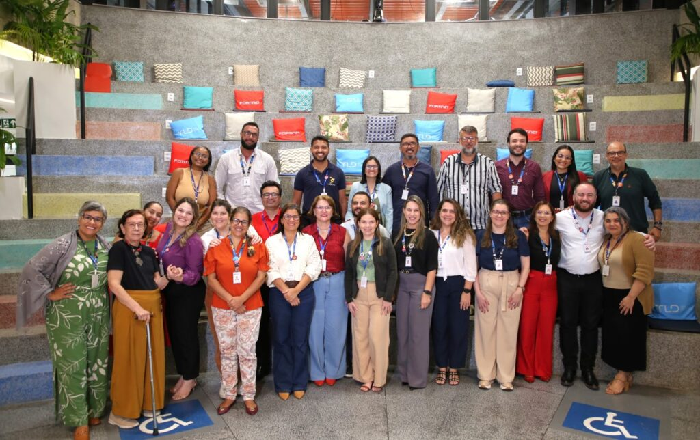

Unit promove ciclo de aprendizagem de liderança para coordenadores de curso
Promover a aproximação entre os estudantes e o mercado de trabalho ainda durante a graduação é um dos grandes diferenciais da Universidade Tiradentes (Unit). Atenta à importância desse vínculo, a instituição, por meio do Unit Carreiras, desenvolve ações que ampliam as chances de inserção profissional dos alunos. Entre elas, o evento “Conexão com o Mercado de Trabalho” que se destaca ao oferecer oportunidades de cadastro em vagas de estágio e emprego, além de marcar as comemorações pelo Dia do Estagiário, celebrado em 18 de agosto.
Em sua terceira edição, o evento atendeu cerca de 478 estudantes. Segundo Ana Paula Morais, coordenadora do Unit Carreiras, a proposta do evento é ampliar o acesso dos estudantes a vagas de estágio e emprego. “Reunimos cinco agentes de integração que já possuem milhares de empresas cadastradas em suas plataformas. Dessa forma, conseguimos oferecer aos nossos alunos acesso a mais de três mil empresas parceiras. O grande diferencial é que eles podem sair daqui já com uma carta de encaminhamento para entrevista, ou pelo menos cadastrados para futuras oportunidades”, destacou.
A ação foi organizada em dois turnos, das 9h às 11h e das 17h30 às 19h30, para atender diferentes perfis de alunos. O foco, segundo ela, está sempre na comunidade acadêmica “Além dos estudantes, os egressos também podem participar. Não abrimos a divulgação para o público externo justamente para manter o atendimento voltado para a nossa comunidade. A divulgação foi feita por e-mail marketing e repassada também aos coordenadores, garantindo que todos tivessem acesso às informações e pudessem participar”, completa.
Preparação para o futuro profissional
Para a gerente do Unit Carreiras, Janaína Machado, a iniciativa vai além da busca por vagas. Ela reforça a importância da iniciativa para o desenvolvimento profissional dos estudantes. “A jornada acadêmica exige uma postura profissional. O estudante precisa buscar o mercado, adquirir experiência prática para que sua formação seja ainda mais completa. Nosso objetivo é alinhar a teoria com a prática. Gostamos de dizer que nossos formandos já chegam ao mercado com vivência, já experimentaram esse contato ainda na academia, e isso faz com que se sintam muito mais preparados para atuar”, reforça.
A parceria da Unit com os agentes de integração é um ponto chave para o sucesso do evento. Alisson Pinto, consultor comercial do Centro de Integração Empresa-Escola (CIEE), reforça a importância dessa colaboração. “Já são muitos anos que o CIEE é parceiro da Universidade Tiradentes. Estar aqui nesse momento de conexão com o mercado de trabalho é uma oportunidade muito importante, porque conseguimos oferecer à sociedade sergipana acesso a estágios e também ao programa de jovem aprendiz”, destaca. Ele ressalta que o papel social dessas ações é fundamental para orientar os jovens e inseri-los na comunidade, aproximando-os de instituições que se preocupam com sua preparação para o mercado.
A estudante Cleiane Madalena Andrade, do 4º período de Enfermagem, participou do evento em busca de uma vaga. Para ela, a iniciativa reforça o cuidado da universidade com seus alunos. “A Unit oferece muitas oportunidades, especialmente pelo Portal Carreiras, que não existe em muitas outras instituições. Hoje consegui me cadastrar em várias vagas e achei o processo rápido e simples. Agora é esperar com fé que venham respostas positivas. Essa aproximação com o mercado faz toda a diferença na nossa formação”, compartilha.